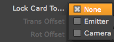
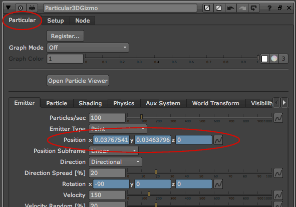

The 3D Gizmo interface
The Setup tab is specifically for controlling the Particular 3D Gizmo group. These controls often refer to working with Particular's camera controls in conjunction with Nuke's camera nodes. They also refer to working with the Particular card, which is the 3D Card node onto which Particular's output is being projected.
The Setup tab.
Set Scene Camera> Get Cameras button
After you add the Gizmo to your scene, this is the first button you should press in the Setup tab. It tells the Gizmo to look for any Camera node connected to your scene, and to populate or refresh the Camera dropdown list of the cameras.
Set Scene Camera> Camera pop-up
After you click the Get Cameras button, then use the Camera pop-up to choose a Camera node.
The pop-up shows a list of cameras that the Gizmo sees, and which you can choose to connect to the scene. Once you select a Nuke scene camera, its Position and Rotation values are automatically used to control Particular's built-in camera, and the two cameras sync up perfectly.
Add Emitter Proxy> Add Selected button
Adds a node to the Objects pop-up list. To do so, select a node in the Node Graph panel, then click the Add Selected button. This node doesn't have to be connected to a Scene node or Emitter node. The node must have Translate and Rotate properties for it to link.
Once the node is added, it can be used as an Emitter proxy as long as it has a Transform knob.
Add Emitter Proxy> Objects pop-up
Shows the list of nodes that the Gizmo sees and you can choose to connect to the scene. Use the Object pop-up to choose a node that's already been populated with the Add Selected and Refresh buttons. The node must have Translate and Rotate properties for it to link.
Add Emitter Proxy> Refresh button
Updates the Objects pop-up with all of the nodes connected to the Emitter scene node.
Add Emitter Proxy> Card Properties> Align to Cam checkbox
When checked, the card onto which Particular's output is being projected will always face the selected scene camera.
When unchecked, the card's rotation values will only calculate using the Rot Offset values.
Add Emitter Proxy> Card Properties> Lock Card To pop-up
Allows you to control the position of the Particular projection card within your scene.

There are three Lock Card To options:
Add Emitter Proxy> Card Properties> Trans Offset xyz
Offsets the Particular projection card in 3D space. Use Trans Offset, for instance, if you lock the card to the Emitter but need it to travel with the camera.
Add Emitter Proxy> Card Properties> Rot Offset xyz
Rotates the Particular projection card in 3D space.
Add Emitter Proxy> Card Properties> Scale xy
Scales the size of the Particular projection card. Be careful when resizing. If the values are too small, the particle image may get clipped.
Add Emitter Proxy> Card Properties> Scale Uniform
Scales the size of the Particular projection card uniformly on the X axis and Y axis.
Technical Note about Particular plug-in
When the 3D Gizmo is being used, there is a slight adjustment in the Particular parameters. The Position and Rotation controls in the Emitter tab become tied to the Trans Offset and Rot Offset controls in the Gizmo Setup tab. The blue shading of the Position and Rotation fields indicate this connection.

The Emitter tab> Position and Rotation controls are connected to the Gizmo's position and rotation.